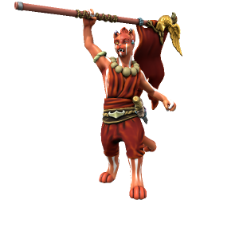

Unna Kausala
She/Her, Kasharite Tabaxi, Lawful Good
Leader of the Kasharite rebellion. Kausala is no stranger to the Sultan's brutality - as a child, she was a servant in the royal palace, up until the juvenile Sultan threw hot oil over her in a tantrum. To keep her silent, the Celebrated Mother had her sent to a temple to live out her days as a servant of the eternal flame. She studied under Brahman Pranja and showed a real aptitude for martial arts, but her fiery temper made her a dangerous element which he could only tolerate for so long. Cast out from the temple, she found a use for her combat skills in the rebellion, rising through the ranks to eventually lead the entire movement.

🡐 Home